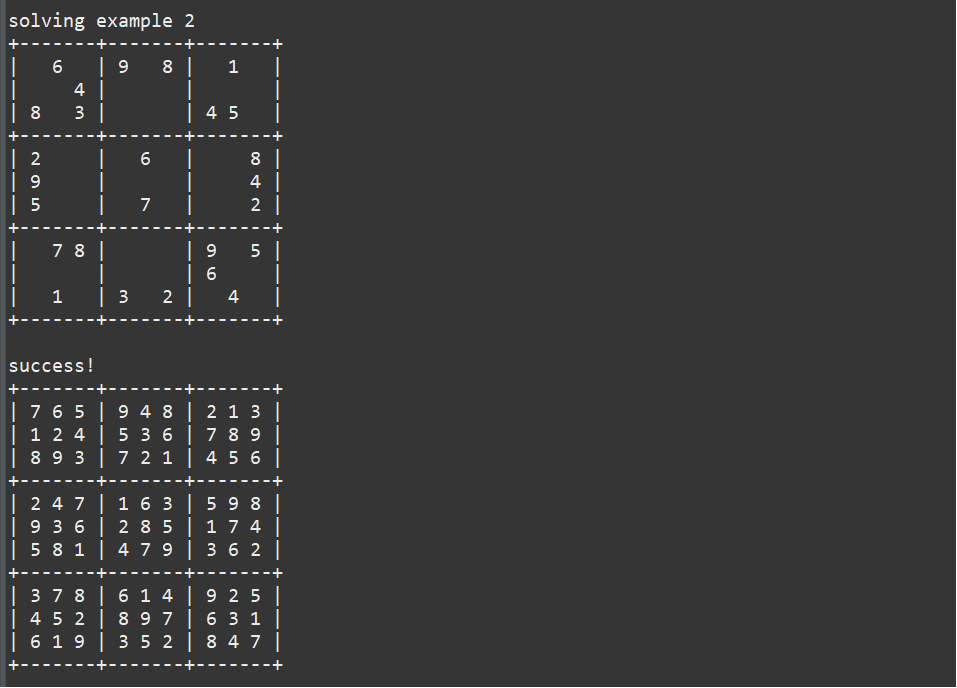

This project is a program that can solve any sudoku problem. I made this project in my 2nd year at UH Manoa, in ICS211. Through this project I learned more about looping through two dimensional arrays and using recursion. I really enjoyed this project because it was fun to see that the program could solve any sudoku problem.
Sudoku is a number puzzle played on a 9x9 grid. The goal is to fill in the grid with numbers from 1 to 9. Each row, column, and 3x3 subgrid must have every number exactly once. The puzzle starts with some numbers already filled in, and you need to use logic to complete the grid.

This program works by looping through the rows and column of the sudoku problem. Whenever there is an empty cell in the sudoku problem, a function to get the possible values for the cell is called. Each possible value is tested by checking if the same number is in the same row, column or 3 x 3, if all of these conditions are satisfied, the number is plotted. This process is repeated until the sudoku is solved. This program uses recursion and backtracking to solve each sudoku problem